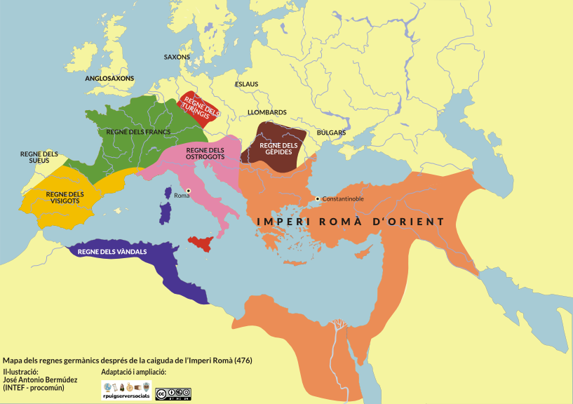
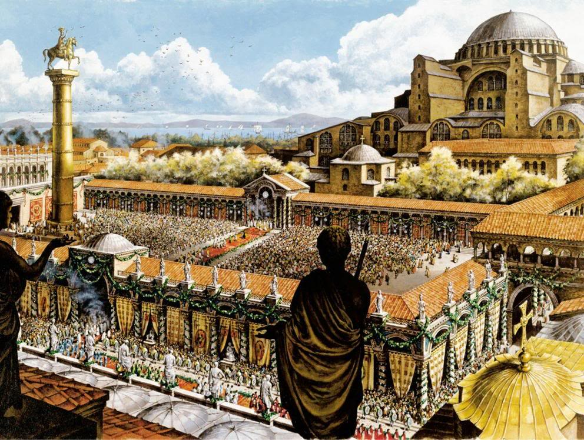
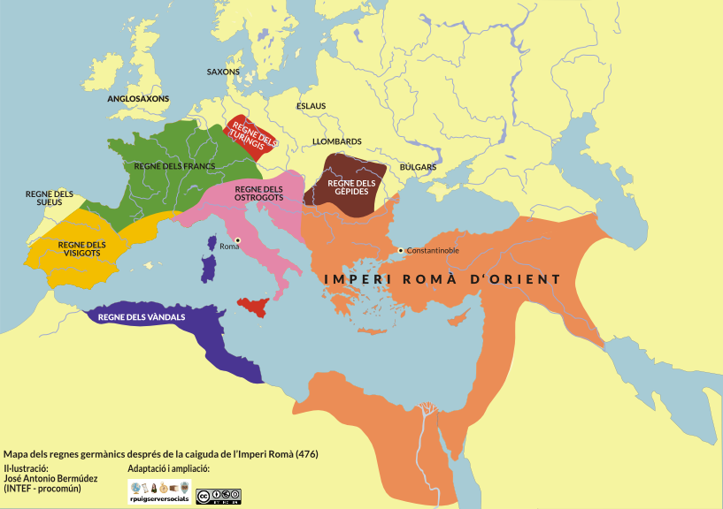
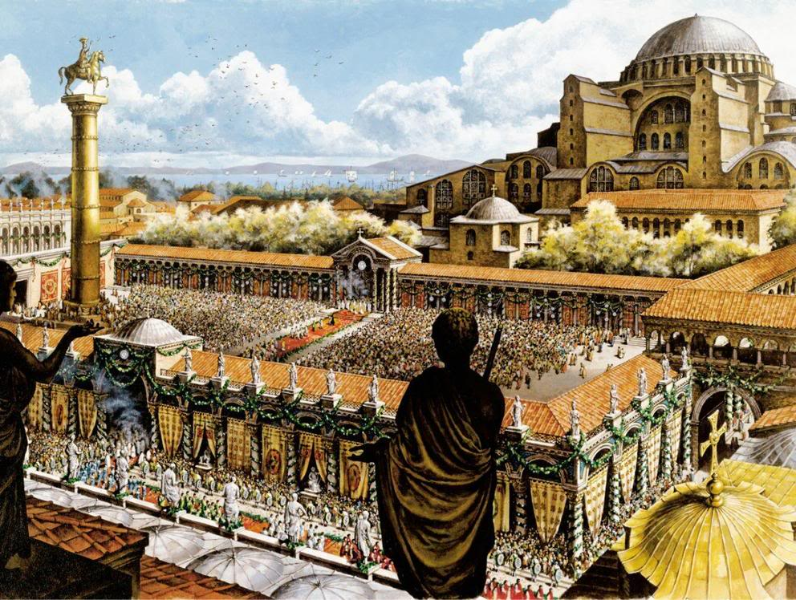
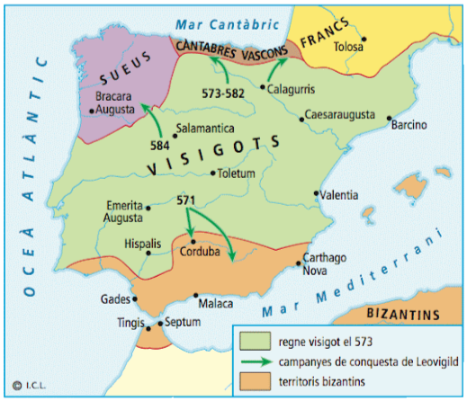
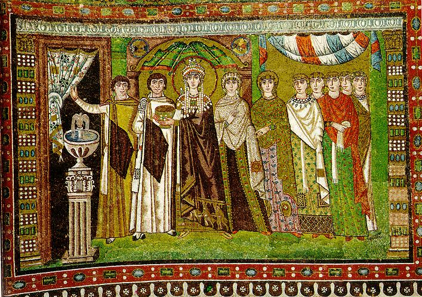
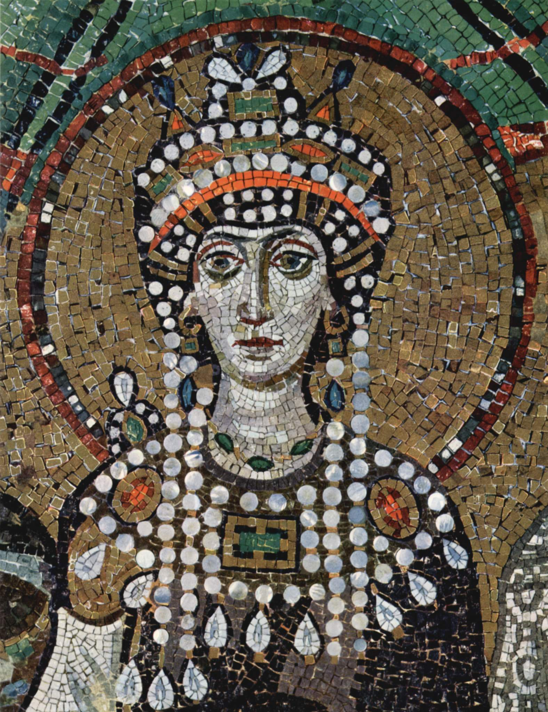

Introducció
Tot i que l’Imperi Romà d’Occident va desaparèixer, a la part oriental va continuar existint amb el nom d’Imperi Bizantí. La seva capital era Constantinoble (l’actual Istanbul).



Tot i que l’Imperi Romà d’Occident va desaparèixer, a la part oriental va continuar existint amb el nom d’Imperi Bizantí. La seva capital era Constantinoble (l’actual Istanbul).


A la península Ibèrica, la zona sud va estar en mans de l’imperi bizantí entre el segle VI i VII.
Les Illes Balears també es van incorporar als seus dominis durant el segle VI i fins que varen passar a estar sota domini musulmà.

Quant a la societat, la bizantina estava dividida en grups amb més o menys poder i riquesa, i cadascú tenia un paper molt clar dins l’imperi.
Pel que fa a la religió, el cristianisme va ser un puntal fonamental de l’imperi bizantí.
Respecte a la llengua, el llatí va ser substituït pel grec com a llengua oficial a causa de la influència de la cultura grega. A més, les cultures orientals també van tenir una gran presència, ja que estaven mesclades des dels temps d’Alexandre el Gran.
Amb relació al poder, a l’Orient l’emperador continuava sent molt poderós i concentrava el poder polític i religiós. L’Imperi Bizantí era molt organitzat, amb una administració i un exèrcit forts. Un dels emperadors més famosos va ser Justinià que va recopilar totes les lleis romanes en un gran codi: el Codi de Justinià. Aquest recull va conservar el dret romà i va influir en les lleis d’Europa durant segles. A diferència dels regnes germànics, les lleis bizantines eren iguals per a tothom i molt ben organitzades.
En l’àmbit econòmic, les activitats principals van ser l’agricultura, la ramaderia i l’artesania a les ciutats. La situació geogràfica de l’imperi bizantí va afavorir que es convertís en un lloc de pas entre orient i occident fet que va ajudar al desenvolupament del comerç.
Finalment, si ens fixam en l’art veim que està ple de simbolisme religiós. Les principals construccions van ser basíliques (esglésies) que es decoraven amb cúpules gegants, pintures i mosaics. L'exemple més representatiu és l'església de Santa Sofia a Constantinoble. L’art bizantí era menys realista que el romà, ja que volia transmetre espiritualitat més que realisme.

.jpg)

Llicenciat sota la Llicència Creative Commons Reconeixement CompartirIgual 4.0